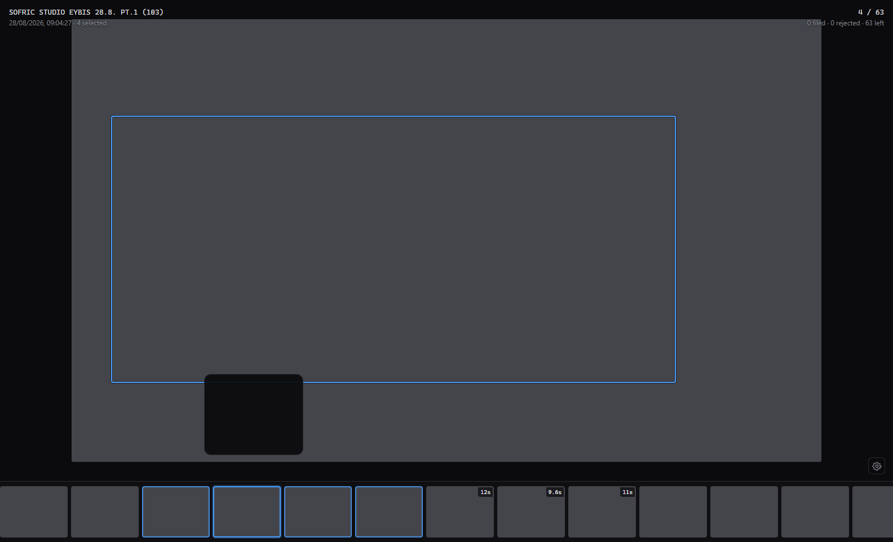
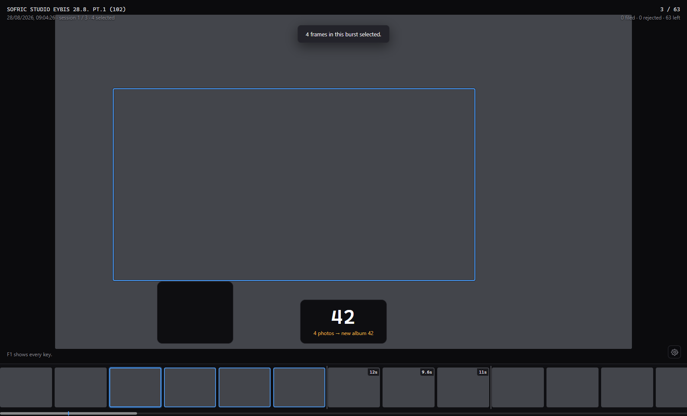
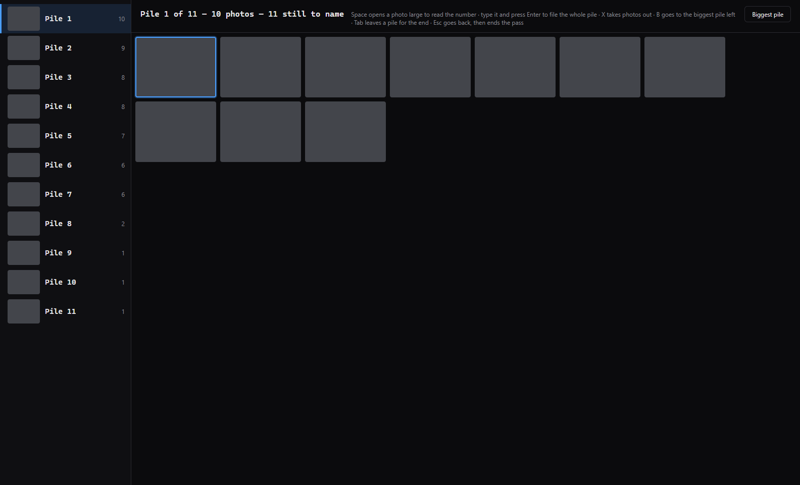
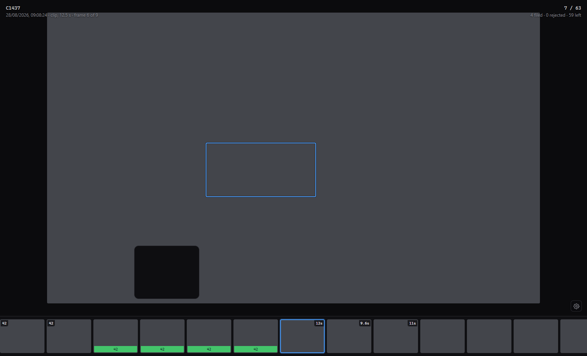
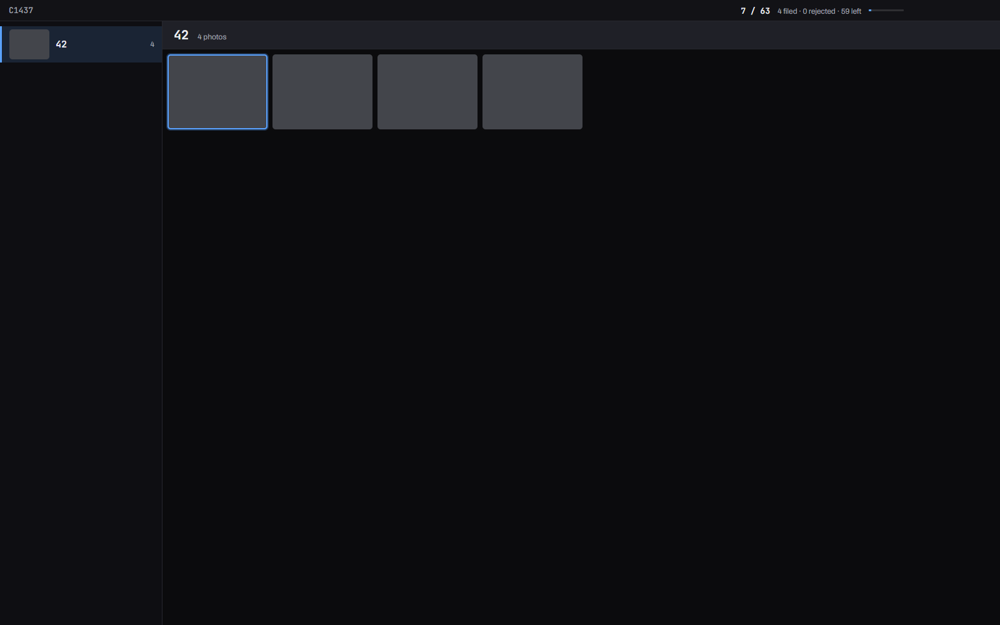
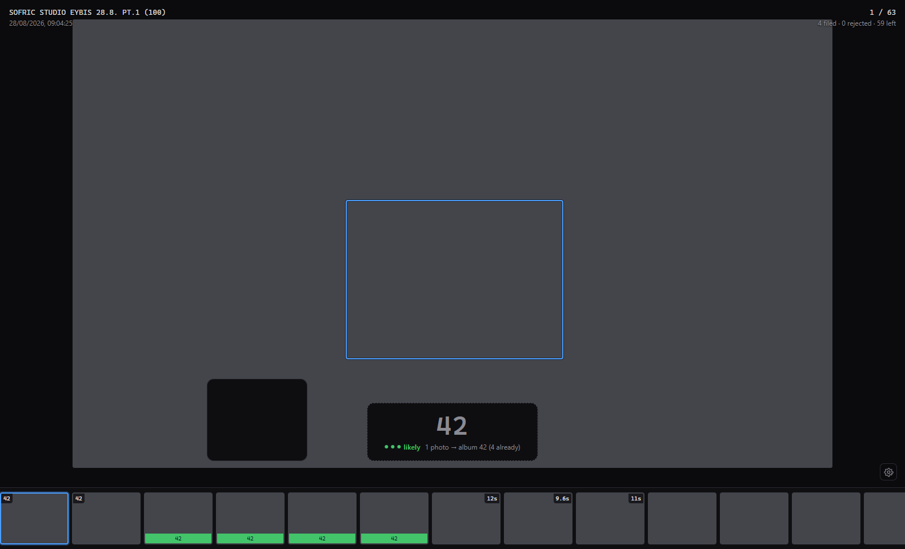
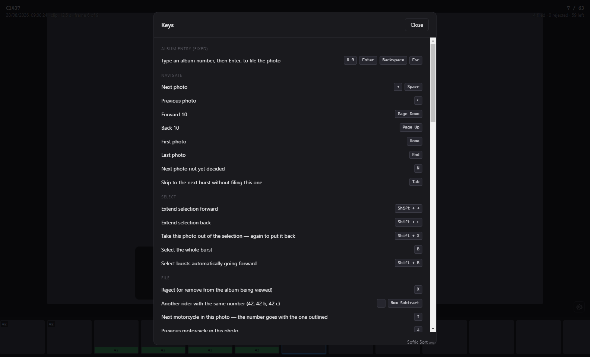
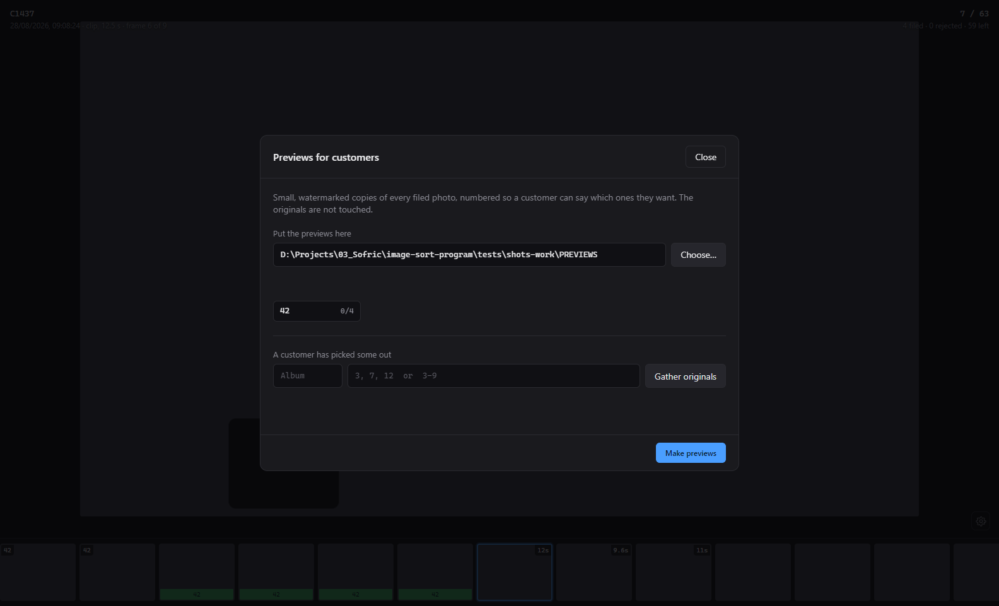

Sorting a day of motorsport photographs into per-rider albums, without taking your hands off the keyboard.
Razvrstavanje fotografija s moto događaja u albume po vozačima, bez dizanja ruku s tipkovnice.
Look, type, Enter. Everything else is there to keep that going.
Pogledaj, upiši, Enter. Sve ostalo postoji da to ne prekida.

Step forward with →. When you land on the first frame of a burst — a rider going past, four or five frames firing — the whole run is selected for you, and you stay on that first frame, where the number is usually clearest. You never have to gather it by hand.
Krećite se naprijed tipkom →. Kad dođete na prvu sliku rafala — vozač prolazi, okine se četiri ili pet slika — cijeli niz se označi sam, a vi ostajete na toj prvoj slici, na kojoj je broj obično najčitljiviji. Nikad ga ne morate skupljati ručno.
← and → then go through the run without losing it, so you can look along the frames for one where the number is clear. Shift+X takes the photo you are on out of the run — for one that is soft, or where the bike is half out of the frame — and pressing it again puts it back. Stepping off either end of the run lets go of it, and so does Esc.
← i → zatim prolaze kroz niz a da ga ne izgube, pa možete pregledati slike i naći onu na kojoj je broj jasan. Shift+X izbacuje fotografiju na kojoj ste iz niza — za onu koja je mutna ili kojoj je motor napola izvan kadra — a ponovni pritisak vraća je natrag. Korak izvan bilo kojeg kraja niza pušta ga, kao i Esc.
Just the digits. There is no field to click into and no mode to be in: digits always mean a rider's number, wherever you are.
Samo znamenke. Nema polja u koje treba kliknuti ni načina rada u kojem se treba nalaziti: znamenke uvijek znače broj vozača, gdje god se nalazili.
Every frame is copied into that rider's album, and the cursor lands on the next burst, already selected. Type the next number.
Sve slike kopiraju se u album tog vozača, a pokazivač staje na sljedeći rafal, već označen. Upišite sljedeći broj.

Your photographs are only ever read. Sorting copies files out; nothing in the source folder is moved, renamed or altered. One photograph can go to several riders — file it again with a different number, pressing ↑ first to outline the other rider's bike.
Vaše fotografije se samo čitaju. Razvrstavanje kopira datoteke; ništa se u izvornoj mapi ne premješta, ne preimenuje niti mijenja. Jedna fotografija može ići kod više vozača — spremite je ponovno s drugim brojem, a prije toga tipkom ↑ obrubite motor drugog vozača.
Every event you have opened, most recent first. Pick one up where you left it.
Svaki događaj koji ste otvorili, najnoviji prvi. Nastavite ondje gdje ste stali.
When the app starts, and whenever you press Mod+O, it shows your projects: for each, its photos and albums folders, how far you got — filed, rejected, left, and how many albums — and when you last opened it. Click one, or choose it with ↑ ↓ and press Enter. Esc takes you straight back to the project that is open. For a new event, New project below the list takes a photos folder and an albums folder beside it, as it always has.
Kad se program pokrene, i kad god pritisnete Mod+O, prikazuje vaše projekte: za svaki mapu s fotografijama i mapu s albumima, dokle ste stigli — spremljeno, odbačeno, preostalo i broj albuma — te kad ste ga zadnji put otvorili. Kliknite projekt, ili ga odaberite tipkama ↑ ↓ i pritisnite Enter. Esc vas vraća ravno u projekt koji je otvoren. Za novi događaj, u dijelu Novi projekt ispod popisa birate mapu s fotografijama i mapu s albumima pokraj nje, kao i dosad.
A project is its albums folder — that is where your progress is kept. Open the same albums folder with different photos and it is still the same project.
Projekt je njegova mapa s albumima — ondje se čuva vaš napredak. Otvorite li istu mapu s albumima s drugim fotografijama, to je i dalje isti projekt.
A project whose drive is not plugged in is greyed out, and says so; plug the drive in and it is back. Remove from list only takes it off this list — nothing on any disk is touched. The photos folder and the albums folder must sit side by side: one inside the other is refused. Switching project, or closing the app, first finishes any photos still being copied, and says so — nothing you have filed is left half done.
Projekt čiji disk nije priključen prikazan je sivo, uz objašnjenje; priključite disk i opet je tu. Ukloni s popisa samo ga miče s ovog popisa — ništa se ni na jednom disku ne dira. Mapa s fotografijama i mapa s albumima moraju biti jedna pokraj druge: ako je jedna unutar druge, program to odbija. Prelazak na drugi projekt, kao i zatvaranje programa, najprije dovršava fotografije koje se još kopiraju, i to javlja — ništa što ste spremili ne ostaje napola.
Shift+G gathers everything you have not decided about into piles that each look like one bike. You name a pile; it files the whole pile at once.
Shift+G skuplja sve o čemu niste odlučili u hrpe od kojih svaka izgleda kao jedan motor. Vi imenujete hrpu; program sprema cijelu hrpu odjednom.

It needs no album to exist first, so you can run it before you start. You can also run it in the middle of a job, and then it knows the albums you have already filled. It looks at your photos once, works out the piles, and shows you one pile at a time as a grid. Type the number, press Enter, and every photo in that pile is filed — one operation, so one Mod+Z takes all of it back out again.
Ne treba mu nijedan album unaprijed, pa ga možete pokrenuti prije nego što počnete. Možete ga pokrenuti i usred posla, i tada zna albume koje ste već napunili. Jednom pregleda vaše fotografije, složi hrpe i pokazuje vam jednu hrpu po jednu, kao mrežu. Upišite broj, pritisnite Enter i svaka je fotografija iz te hrpe spremljena — jedna radnja, pa jedan Mod+Z vraća sve natrag.
Space opens a photo large enough to read the number. That is how you name a pile: you read the number off the bike. While it is large, ← → go through the pile looking for a frame where the board is clear, ↑ ↓ move the outline to another bike if two riders are in the frame, and Esc or Space comes back to the pile. You can type the number and press Enter without going back — it files the whole pile either way.
Space otvara fotografiju dovoljno veliku da pročitate broj. Tako imenujete hrpu: broj pročitate s motora. Dok je uvećana, ← → idu kroz hrpu u potrazi za snimkom na kojoj je tablica jasna, ↑ ↓ premještaju obrub na drugi motor ako su u kadru dva vozača, a Esc ili Space vraća na hrpu. Broj možete upisati i pritisnuti Enter bez vraćanja — svejedno sprema cijelu hrpu.
Look at the pile before you name it. About one photo in forty arrives in a pile it does not belong to — another rider on a machine that looks much the same. X takes the photos you have selected out of the pile before it is filed, and X again puts one back, so taking one out by mistake costs nothing. Anything you take out is offered again at the end of the run. Tab passes over a pile without naming it, and Esc ends the pass.
Pogledajte hrpu prije nego što je imenujete. Otprilike jedna fotografija u četrdeset dođe u hrpu kojoj ne pripada — drugi vozač na motoru koji izgleda vrlo slično. X vadi označene fotografije iz hrpe prije spremanja, a ponovni X vraća ih natrag, pa izbacivanje zabunom ništa ne stoji. Sve što izvadite ponudi se ponovno na kraju prolaza. Tab preskače hrpu bez imenovanja, a Esc prekida prolaz.
B goes to the biggest pile you have still to name, and pressing it again goes to the next biggest — the button above the grid does the same. That is how you come back to the big piles when naming has carried you off among the small ones: after you name a pile the app goes to whichever of the rest most resembles it, which is what puts the number in the box for you, but it can leave you a long way down the list while the biggest are still at the top waiting.
B vodi na najveću hrpu koju još niste imenovali, a ponovni pritisak na sljedeću najveću — gumb iznad mreže radi isto. Tako se vraćate na velike hrpe kad vas je imenovanje odvelo među male: nakon što imenujete hrpu, program ide na onu koja joj najviše sliči, zbog čega je broj već u okviru, ali vas to može odvesti daleko niz popis dok najveće još čekaju na vrhu.
Every pile is listed down the left, the way your albums are in the album browser — its first photo, how many it holds, and what became of it. PgUp and PgDn go from one pile to the next, and clicking a pile goes straight to it, so one you passed over is always one click away. The list stays in the order the piles were worked out and never re-sorts itself; what moves is where you are in it. When you name a pile, the app jumps to whichever of the rest most resembles it — that is what puts the number in the box for you — and the list shows you where it went.
Sve su hrpe popisane lijevo, kao i vaši albumi u pregledniku albuma — prva fotografija, koliko ih sadrži i što je s njom bilo. PgUp i PgDn idu s jedne hrpe na sljedeću, a klik na hrpu vodi ravno na nju, pa je hrpa koju ste preskočili uvijek jedan klik daleko. Popis ostaje u redoslijedu kojim su hrpe složene i nikad se sam ne presloži; pomiče se samo mjesto na kojem ste. Kad imenujete hrpu, program skoči na onu koja joj najviše sliči — zbog toga je broj već u okviru — a popis pokazuje kamo je otišao.
Photos you have already filed are left alone, and so are ones you have thrown out with X. The number offered for a pile is the ordinary suggestion, at the same bar it uses everywhere else, and the misfile warning asks the same question before a pile is filed as it does before a burst. Photos that join no pile — no motorcycle in them, or too small or blurred to judge — are offered on their own at the end.
Fotografije koje ste već spremili ostaju netaknute, kao i one koje ste odbacili s X. Broj ponuđen za hrpu obična je preporuka, uz isti prag kao i svugdje drugdje, a upozorenje o krivom albumu postavlja isto pitanje prije spremanja hrpe kao i prije rafala. Fotografije koje ne uđu ni u jednu hrpu — nema motora na njima, ili je premalen ili previše mutan za procjenu — ponude se zasebno na kraju.
Type the number, then press -. The second rider gets 42 b.
Upišite broj, zatim pritisnite -. Drugi vozač dobiva 42 b.
When a meeting runs two classes, two riders can wear the same number. Type 42 as usual and press - — the box reads 42 b, and Enter files them into a folder of their own. Press it again for 42 c, and again to come back round to plain 42.
Kad se na jednom događaju voze dvije klase, dva vozača mogu imati isti broj. Upišite 42 kao i inače pa pritisnite - — u okviru piše 42 b, a Enter ih sprema u vlastitu mapu. Pritisnite ponovno za 42 c, i još jednom da se vratite na obični 42.
Once both exist, the app works out which of them a photograph belongs to and aims there by itself — the letter appears in grey, added by the app rather than typed by you. Press - to overrule it. Everything else is unchanged: a number with only one album behaves exactly as it always has.
Kad oba postoje, program sam prepoznaje kojem od njih fotografija pripada i cilja tamo — slovo se prikazuje sivo, jer ga je dodao program, a ne vi. Pritisnite - da ga nadglasate. Sve ostalo ostaje isto: broj koji ima samo jedan album ponaša se točno kao i dosad.
The folder is called 42 b so it sits next to 42 in Explorer. Rename it to the rider's name whenever you like — the app picks the new name up the next time you open the job.
Mapa se zove 42 b pa u Exploreru stoji odmah do 42. Preimenujte je u ime vozača kad god želite — program će novi naziv preuzeti sljedeći put kad otvorite posao.
Clips sit among the photos, in the order you shot them. , and . step through nine frames of one.
Isječci stoje među fotografijama, redom kojim ste ih snimili. , i . idu kroz devet slika isječka.

A clip is filed exactly as a photo is: type the number and press Enter, and the whole clip is copied into that rider’s folder. X rejects it, Mod+Z undoes it. It shows a frame from the middle of itself, which is usually where the rider is.
Isječak se sprema jednako kao fotografija: upišite broj i pritisnite Enter, i cijeli se isječak kopira u mapu tog vozača. X ga odbacuje, Mod+Z poništava. Prikazuje sliku iz svoje sredine, gdje je vozač obično i vidljiv.
A clip does not play, and there is no sound. . moves to the next of nine frames spread across it and , back — the same nine whether the clip is four seconds or twenty, so any clip takes the same nine presses to look through. That is enough to see whose it is, which is what you are deciding.
Isječak se ne reproducira i nema zvuka. . ide na sljedeću od devet slika raspoređenih po njemu, a , natrag — istih devet bilo da isječak traje četiri sekunde ili dvadeset, pa svaki zahtijeva jednako devet pritisaka. To je dovoljno da vidite čiji je, a to je ono o čemu odlučujete.
A clip is always on its own. It is never selected together with photos, so a burst you grab with B or Shift+→ stops at it. That is deliberate: a clip is a different thing to give a rider than a photo, and it is large.
Isječak je uvijek sam. Nikad se ne označava zajedno s fotografijama, pa se rafal koji uzmete s B ili Shift+→ zaustavlja na njemu. To je namjerno: isječak je drugačija stvar za dati vozaču nego fotografija, i velik je.
The app recognises the rider in a clip as it does in a photo, and looks at five frames across it rather than one, because a clip can start on empty track. Filing one takes a moment longer than a photo does — the file is a hundred times the size.
Program prepoznaje vozača u isječku kao i na fotografiji, i gleda pet slika po isječku umjesto jedne, jer isječak može početi na praznoj stazi. Spremanje traje malo dulje nego kod fotografije — datoteka je sto puta veća.
Type the number, then F to see only them, O to open their folder — or A for the album browser, below.
Upišite broj, zatim F da vidite samo njega, O da otvorite njegovu mapu — ili A za preglednik albuma, niže.
A number in front of a key means “that album”. Type 42 then F and the filmstrip shows only rider 42, so you can check they got everything without hunting for one of their photographs first; Esc comes back. Type 42 then O and their folder opens in Explorer rather than the albums folder with two hundred others in it.
Broj ispred tipke znači „taj album“. Upišite 42 pa F i traka prikazuje samo vozača 42, pa možete provjeriti je li dobio sve bez traženja neke njegove fotografije; Esc vraća natrag. Upišite 42 pa O i njegova se mapa otvara u Exploreru, umjesto mape s albumima u kojoj ih je dvjesto.
With nothing typed both keys do what they always did — F shows the album this photograph is in, O opens the albums folder. And once you have renamed 42 to something like 42 Marko, typing 42 still finds it. If two folders could be meant, it names them and opens neither.
Ako ništa nije upisano, obje tipke rade kao i dosad — F prikazuje album u kojem je ova fotografija, O otvara mapu s albumima. A kad preimenujete 42 u nešto poput 42 Marko, upisivanje 42 i dalje ga pronalazi. Ako bi se moglo raditi o dvije mape, program ih imenuje i ne otvara nijednu.
U narrows the view the other way: everything you have not decided about yet, with what you have filed and rejected taken out. Useful at the end of a card to see what is left, and after a break to find where you stopped. Filing from that view makes photographs disappear as you go, and you keep your place rather than being thrown back to the start. Esc, or the button in the blue bar, brings everything back.
U sužava pregled na drugi način: sve o čemu još niste odlučili, bez onoga što ste spremili i odbacili. Korisno na kraju kartice da vidite što je ostalo, i nakon pauze da nađete gdje ste stali. Spremanje iz tog pregleda uklanja fotografije kako idete, a vi zadržavate svoje mjesto umjesto da vas vrati na početak. Esc, ili gumb u plavoj traci, vraća sve natrag.
Press A to see every album — and the one you pick, whole, as a grid of its photos.
Pritisnite A da vidite sve albume — a onaj koji odaberete, cijeli, kao mrežu fotografija.

The albums are listed down the left in number order, each with its first photo and how many are in it. PgUp and PgDn go from one album to the next; the arrows move about the grid. Space opens a photo large and goes back again; while it is large, ← → go through the album. A number then A opens that album. J takes you to the photo among all the others in the sorting view, with the rest of its burst either side. Esc, or A again, takes you back to where you were.
Albumi su popisani lijevo, po redu brojeva, svaki sa svojom prvom fotografijom i brojem fotografija u njemu. PgUp i PgDn idu s jednog albuma na sljedeći; strelice se kreću po mreži. Space otvara fotografiju uvećano i vraća natrag; dok je uvećana, ← → idu kroz album. Broj pa A otvara taj album. J vas vodi na tu fotografiju među svima ostalima u razvrstavanju, s ostatkom njezina rafala sa strane. Esc, ili ponovno A, vraća vas gdje ste bili.
It changes an album the way the album view does: X takes the selected photos out — only the copies the app made are deleted, and Mod+Z puts them back — and a number with Enter files them into another album as well. The warning asks the same question it asks while sorting. On a photo opened large, ↑ ↓ move the outline to another bike first, so a frame with two riders goes into the second one's album as their bike.
Album mijenja kao i pregled albuma: X vadi označene fotografije — brišu se samo kopije koje je napravio program, a Mod+Z ih vraća — a broj s Enterom sprema ih i u drugi album. Upozorenje postavlja isto pitanje kao pri razvrstavanju. Na uvećanoj fotografiji ↑ ↓ najprije premjestite obrub na drugi motor, pa fotografija s dva vozača ide u album drugoga kao njegov motor.
It points at photos that look as though they are in the wrong album. A burst that looks like another rider's album is marked in amber on its photos — looks like 17, or unlike 42 when nothing in the album resembles it — and the same words are under the photo when you open it large. Each album's line in the list says how many of its bursts look wrong. N goes to the next one, in this album or the ones after it, and Shift+N back. It is the misfile warning's own judgement made after the fact, so Shift+W turns both off. Expect it to mark a burst that was filed correctly about once in forty — around six in a day's work — and to catch nearly every burst filed under the wrong number. A photo filed under two riders is never marked for being in both. In a big job the counts in the list fill in over a little while.
Pokazuje fotografije koje izgledaju kao da su u krivom albumu. Rafal koji izgleda kao album drugog vozača označen je žuto na svojim fotografijama — izgleda kao 17, ili ne sliči 42 kad mu ništa u albumu nije slično — a iste riječi stoje ispod fotografije kad je otvorite uvećano. Uz svaki album na popisu piše koliko njegovih rafala izgleda krivo. N vodi na sljedeći, u ovom albumu ili u onima nakon njega, a Shift+N natrag. To je isti sud kao upozorenje o krivom albumu, samo naknadno, pa Shift+W isključuje oboje. Očekujte da će otprilike jednom u četrdeset označiti rafal koji je dobro spremljen — oko šest u danu rada — i da će uhvatiti gotovo svaki rafal spremljen pod krivim brojem. Fotografija spremljena pod dva vozača nikad nije označena zato što je u oba. U velikom poslu brojevi na popisu popune se kroz neko vrijeme.
Photos that were already in an album folder but did not come from this job — another card, an edited copy, something copied in by hand — are shown after the others, marked not from this job. You can look at them; nothing can be done to them from here.
Fotografije koje su već bile u mapi albuma, a nisu iz ovog posla — s druge kartice, uređena kopija, nešto ručno kopirano — prikazane su nakon ostalih, s oznakom nije iz ovog posla. Možete ih pogledati; odavde se s njima ništa ne može učiniti.
File someone once, and it offers their number every time they come past again.
Spremite vozača jednom i program nudi njegov broj svaki sljedeći put kad prođe.

left: a suggestion — dimmed, dashed border · right: what you typed · beside each: the bike the number goes with, which is outlined on the photograph too
lijevo: prijedlog — blijedi tekst, iscrtkani rub · desno: ono što ste upisali · uz svaki: motor uz koji ide broj, koji je obrubljen i na samoj fotografiji
Likely. It has seen this bike before and is confident. Enter files it.
Vjerojatno. Već je vidio ovaj motor i siguran je. Enter ga sprema.
Unsure — often because frames within the burst disagreed. Read the number yourself before pressing Enter.
Nesiguran — često zato što se slike unutar rafala ne slažu. Sami pročitajte broj prije nego pritisnete Enter.
A guess. Treat it as a prompt, not an answer.
Nagađanje. Shvatite to kao podsjetnik, ne kao odgovor.
Either it hasn't seen this rider yet — as on every rider's first pass — or it isn't confident enough to speak. It stays quiet rather than guess.
Ili još nije vidio ovog vozača — kao pri prvom prolasku svakog vozača — ili nije dovoljno siguran da bi nešto rekao. Radije šuti nego da nagađa.
The bike beside the number is always there. On every photograph the app shows, magnified, the motorcycle it is looking at — the sharpest one — and outlines the same bike on the photograph, so you can see which one a number would go with before you type it. When there is no bike to show it says why: looking… while it reads the photograph, no motorcycle found, or too small to recognise for a bike far away.
Motor pokraj broja uvijek je tu. Na svakoj fotografiji program uvećano prikazuje motocikl koji gleda — najoštriji — i obrubljuje isti motor na fotografiji, pa prije upisivanja vidite uz koji bi motor išao broj. Kad nema motora za prikazati, piše zašto: gleda… dok čita fotografiju, nije pronađen motocikl, ili premalen za prepoznavanje za motor u daljini.
Recognition is not working means it has stopped altogether. Sorting carries on exactly as before — you type every number yourself — but tell me if you ever see it.
Prepoznavanje ne radi znači da je potpuno stalo. Razvrstavanje ide dalje točno kao i prije — sve brojeve upisujete sami — ali javite mi ako to ikad vidite.
Typing always wins. Press any digit and the suggestion disappears — your number replaces it outright, solid white instead of dimmed. The bike stays beside it, so you can still see which one your number goes with. Backspace back to empty and the suggestion returns.
Upisivanje uvijek ima prednost. Pritisnite bilo koju znamenku i prijedlog nestaje — vaš broj ga u cijelosti zamjenjuje, bijel umjesto blijed. Motor ostaje pokraj njega, pa i dalje vidite uz koji motor ide vaš broj. Obrišite sve tipkom Backspace i prijedlog se vraća.
Enter on an empty box accepts whatever is shown. If nothing is shown, it does nothing.
Enter na praznom okviru prihvaća ono što piše. Ako ništa ne piše, ne radi ništa.
It says so before a photograph goes to the wrong rider. If what you typed does not match the bike on screen, the first Enter shows a line in amber instead of filing — either this looks like 42 b, not 42, or these photos look unlike the ones already in 42. Press Enter again to file anyway, or Esc to dismiss it and keep the number you typed. On a photograph holding more than one bike it adds ↑ for another bike: often what looks wrong is that the outline is on the other rider.
Javlja se prije nego fotografija ode krivom vozaču. Ako upisano ne odgovara motoru na ekranu, prvi Enter umjesto spremanja prikaže žutu poruku — ili ovo izgleda kao 42 b, a ne 42, ili ove fotografije ne sliče onima koje su već u 42. Pritisnite Enter ponovno da ipak spremite, ili Esc da je odbacite i zadržite upisani broj. Na fotografiji s više motora dodaje ↑ za drugi motor: često je ono što izgleda krivo zapravo obrub na drugom vozaču.
A suggestion can lag a second or two behind a fast pass — it looks at photographs ahead of your cursor while you work. It never holds you up; the photograph itself is always instant.
Prijedlog može kasniti sekundu-dvije ako brzo prolazite — program gleda fotografije ispred vas dok radite. Nikad vas ne usporava; sama fotografija se uvijek prikazuje odmah.
↑ moves the outline to the next bike. The number goes with the bike that is outlined.
↑ pomiče obrub na sljedeći motor. Broj ide uz motor koji je obrubljen.
When the frame holds two riders and the outline is on the one you don't want, press ↑; ↓ goes back. Under the magnified bike it says bike 2 of 2, the suggestion changes to that rider a moment later, and when you file, that bike is what the album learns — so each rider's album learns their own bike, not the other one's.
Kad su na slici dva vozača, a obrub je na onom kojeg ne želite, pritisnite ↑; ↓ vraća natrag. Ispod uvećanog motora piše motor 2 od 2, prijedlog se trenutak kasnije mijenja za tog vozača, a kad spremite, album nauči upravo taj motor — pa album svakog vozača uči njegov motor, a ne tuđi.
Switching changes only the photograph on screen. If a whole burst is selected, the rest of it is filed with it as usual, and those frames still count as their sharpest bike — so the second rider's album can learn the first rider's bike from them. To file just the one frame for the second rider, press Esc first to drop the rest of the burst.
Prebacivanje mijenja samo fotografiju na ekranu. Ako je označen cijeli rafal, ostatak se sprema s njom kao i inače, a te slike i dalje vrijede kao njihov najoštriji motor — pa album drugog vozača iz njih može naučiti motor prvoga. Da za drugog vozača spremite samo tu jednu sliku, najprije pritisnite Esc da poništite ostatak rafala.
Once a photograph is filed the switch is forgotten: come back to it and the outline starts on the sharpest bike again, ready to move to whoever is left.
Kad je fotografija spremljena, prebacivanje se zaboravlja: vratite li se na nju, obrub opet počinje na najoštrijem motoru, spreman da ga pomaknete na onoga tko je ostao.
Digits, Enter, Backspace and Escape are fixed. Everything else can be changed.
Znamenke, Enter, Backspace i Esc su nepromjenjivi. Sve ostalo možete promijeniti.

42 b goes with it
Obriši zadnju znamenku — slovo iz 42 b odlazi s njomThese three are fixed, like the keys in the settings panel.
Ove tri tipke su stalne, kao i one u prozoru s postavkama.
If you forget a key, click the gear at the bottom right of the photo. It lists every action with the key that runs it, and lets you change any of them. It is the only button on the sorting view — everything else is the keyboard.
Ako zaboravite tipku, kliknite zupčanik u donjem desnom kutu fotografije. Ondje je popis svih radnji s tipkom koja ih pokreće, i svaku možete promijeniti. To je jedini gumb na zaslonu za razvrstavanje — sve ostalo je tipkovnica.
The same panel has the language switch at the top: English or Hrvatski. The app starts in your computer's language the first time, and remembers whichever you choose.
U istom prozoru, na vrhu, je i izbor jezika: English ili Hrvatski. Program prvi put kreće na jeziku vašeg računala, a zatim pamti što ste odabrali.
Mod is Ctrl on Windows and Cmd on a Mac. Keys are bound to the physical key, so they behave the same on either machine whatever the keyboard layout.
Mod je Ctrl na Windowsima i Cmd na Macu. Tipke su vezane uz fizičku tipku, pa rade jednako na oba računala bez obzira na raspored tipkovnice.
Small, marked copies to send out — then the originals for whatever they pick.
Male, označene kopije za slanje — pa originali za ono što odaberu.

Mod+E makes a watermarked, numbered copy of every filed photograph, into a folder you choose. Send that folder to the customer. When they reply with numbers — 3, 7, 12 or 3-9 — type the album and their numbers into A customer has picked some out, and the full-resolution originals are gathered into one folder, ready to deliver.
Mod+E radi kopiju svake spremljene fotografije s vodenim žigom i brojem, u mapu koju odaberete. Tu mapu pošaljete kupcu. Kad odgovori brojevima — 3, 7, 12 ili 3-9 — upišete album i njegove brojeve u polje Kupac je odabrao fotografije, i originali u punoj rezoluciji skupe se u jednu mapu, spremni za isporuku.
A clip gets a preview too — a small, silent, marked copy with the same number burnt into it, sharing one run of numbers with the photos, so a customer picks number 47 without caring which it is. These are made one second per second of clip, so an album with a dozen in it takes a couple of minutes rather than a moment; the screen says how long before it starts, and Stop works throughout.
I isječak dobiva pregled — malu, nijemu, označenu kopiju s istim brojem upisanim u nju, u istom nizu brojeva kao fotografije, pa kupac odabere broj 47 bez razmišljanja o čemu se radi. Izrađuju se sekundu po sekundi isječka, pa album s desetak njih traje nekoliko minuta, a ne trenutak; prije početka piše koliko će trajati, a Stop radi cijelo vrijeme.
Previews can't be written into your photos folder or your albums folder — the app refuses both. Running it again is safe: anything already made is left alone.
Pregledne slike ne mogu se spremiti u vašu mapu s fotografijama ni u mapu s albumima — program to odbija. Ponovno pokretanje je sigurno: ono što je već napravljeno ostaje netaknuto.
Six things that will save you a puzzled minute.
Šest stvari koje će vam uštedjeti minutu čuđenja.